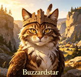
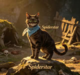

What Makes SkyClan Special
If you've read the Warrior Cats books, you know SkyClan isn't like the other clans. They were driven from the forest, forgotten by the cats who once called them kin, and left to scatter across the world as kittypets and loners. Most cats would have given up. SkyClan didn't. That's what makes their story the most remarkable in the entire series.
These cats are natural climbers. While ThunderClan stalks through undergrowth and RiverClan swims, SkyClan cats scale trees and leap between branches with a grace that looks almost like flying. Their powerful hind legs let them jump distances other cats wouldn't even attempt. In the gorge, they turned sheer rock faces into highways.
But SkyClan's real strength isn't physical. It's the refusal to let their history die. Every cat in this guide played a part in keeping that flame alive.
SkyClan Founders - The Cats Who Started It All
Before there were five clans, there were five settlers. Graywing and Skystar were brothers who came from the mountains with a vision of something better. What they built became SkyClan, and every cat in this section carries that legacy in their blood.


SkyClan Leaders Through the Ages
SkyClan's leadership story is one of the most dramatic in the series. From Skystar's founding vision to Cloudstar's heartbreaking exile, from Spiderstar's dissolution to Leafstar's triumphant rebuilding - these cats carried the weight of a clan that kept falling apart and refusing to stay down.
Skystar
The founder who started it all. Graywing's brother built SkyClan from nothing and set the standard every leader after him tried to match.

Cloudstar
The last leader in the old forest. He watched Twolegs destroy everything and led his cats into exile when no other clan would help.

Buzzardstar
Cloudstar's successor who kept the remaining cats together in the gorge. The second leader of the valley SkyClan.

Spiderstar
The final ancient leader who dissolved SkyClan when rats overran the gorge. A tragic end to the first gorge era.

Leafstar
The first modern leader who rebuilt SkyClan with Firestar's help. She turned scattered loners into a real clan again.
Legendary SkyClan Warrior Cats
Every clan needs its warriors, and SkyClan has produced some unforgettable ones. From the deputies who stood beside their leaders to the fighters who defended the gorge against impossible odds, these cats earned their place in the warrior code.

SkyClan Mates and Family Ties
SkyClan's history is woven together by relationships that crossed boundaries and defied expectations. These pairings shaped not just individual cats, but the entire destiny of the clan.
Graywing and Turtletail - The Founding Bond
Graywing was never meant to be a leader. He was the quiet one, the thinker, the cat who watched before he acted. Turtletail saw something in him that others missed - a steady strength that didn't need to shout to be heard. Together they laid the groundwork for what SkyClan would become, raising kits who carried their blood into generations of warriors.
Skystar and Bright Stream - A Love Cut Short
Bright Stream was Skystar's first mate, a gentle she-cat who believed in his vision even when it scared her. She died giving birth to their kits, and Skystar never fully recovered from the loss. Her memory haunted him for the rest of his life, a ghost of what might have been if fate had been kinder.
Skystar and Storm - Fire and Ice
Storm was nothing like Bright Stream. She was fierce, independent, and refused to bend to anyone's will - including Skystar's. Their relationship was passionate and volatile, producing kits who inherited both their parents' stubbornness. When Storm died, she took another piece of Skystar's heart with her.
Cloudstar and Birdflight - A Separation Forced by Desperation
When SkyClan was driven from the forest, Birdflight made the impossible choice to take their kits and seek refuge in ThunderClan. Cloudstar let her go because he loved her enough to want her safe, even if it meant losing his family. Their story is one of the most heartbreaking in the entire series.
The Full Story of SkyClan Warrior Cat
The Founding
Skystar and Graywing arrived from the mountains with a group of settlers. They chose the forest's edge, where trees met open sky, and built the first SkyClan camp.
The Golden Age
For many seasons SkyClan thrived in the forest. Their hunting skills were unmatched, their warriors respected. They were one of five true clans, equal to ThunderClan, RiverClan, WindClan, and ShadowClan.
The Exile
Twolegs began destroying SkyClan's territory. Cloudstar begged the other clans for a piece of land, but they refused. SkyClan was driven out and scattered across the world.
The Gorge Era
Surviving SkyClan cats found a new home in a rocky gorge far from the forest. They rebuilt, but rats eventually overran them. Spiderstar dissolved the clan, and the survivors scattered.
The Rebuilding
Firestar and Sandstorm traveled far beyond the lake territories and found SkyClan's descendants. They gathered kittypets and loners, restored the warrior code, and Leafstar became the first modern SkyClan leader.
The Return
Modern SkyClan eventually left the gorge and found their way to the lake territories, reuniting with the other four clans and becoming whole again after seasons of isolation.
Frequently Asked Questions About SkyClan Warrior Cat
Who really founded SkyClan?
Skystar gets the credit as the first leader, but SkyClan was truly built by a group effort. Graywing provided the wisdom and stability, Turtletail raised the first generation, and Sparrow Fur served as the first deputy. It took all of them to make SkyClan real.
Why did the other clans let SkyClan die?
Fear and selfishness, mostly. The forest was already crowded, and no clan wanted to give up territory. ShadowClan and RiverClan were particularly hostile. By the time anyone realized how wrong they'd been, SkyClan was already gone.
How did Firestar find SkyClan?
StarClan sent him dreams and visions pointing toward a distant gorge. Firestar and Sandstorm traveled for days beyond any territory they knew, following signs only Firestar could interpret. What they found was a scattered group of cats who barely remembered they were ever a clan.
What makes SkyClan warriors different?
Their jumping ability is legendary. SkyClan cats can leap heights and distances that seem impossible. They fight from above, dropping onto enemies from tree branches and rocky ledges. Their technique is completely different from the ground-based fighting styles of the other clans.
Is SkyClan really back for good?
They've returned to the lake territories and reclaimed their place among the five clans. Whether they stay depends on the same thing that always determined SkyClan's fate - the strength and loyalty of the cats who call it home.
Explore More Warrior Cats Content
Love SkyClan Warrior Cat? There's plenty more to discover:
- Clan Name - Build your own warrior clan with the Clan Name generator
- Warrior Cats Name Generator - Create your own Warrior Cats name
- ThunderClan Warrior Cats - Meet the forest's bravest clan
- RiverClan Warrior Cats - Discover the river hunters
- ShadowClan Warrior Cats - Explore the dark forest clan
- WindClan Warrior Cats - Learn about the moor runners
- About Us - Learn more about our Warrior Cats fan community